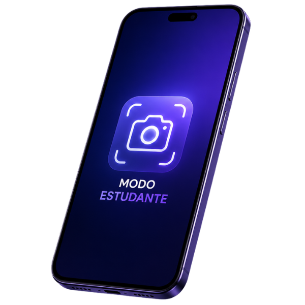
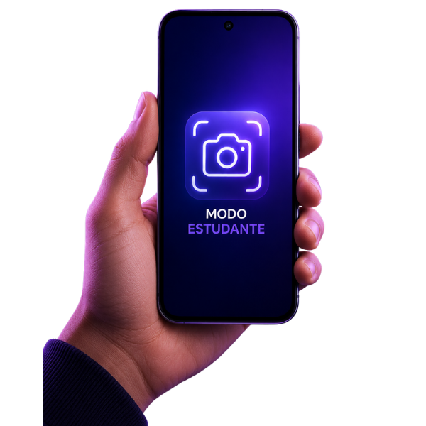
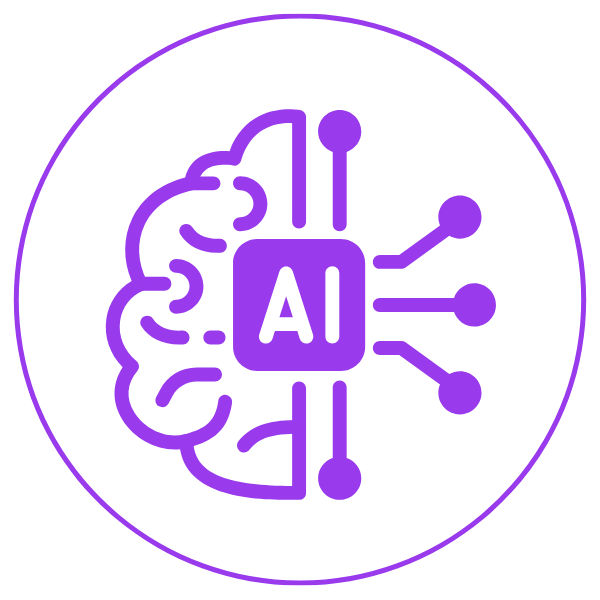
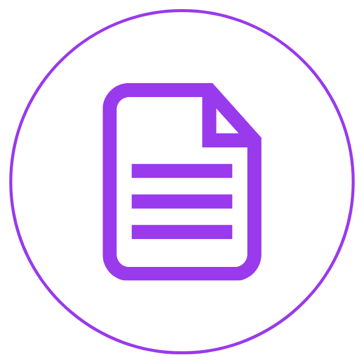
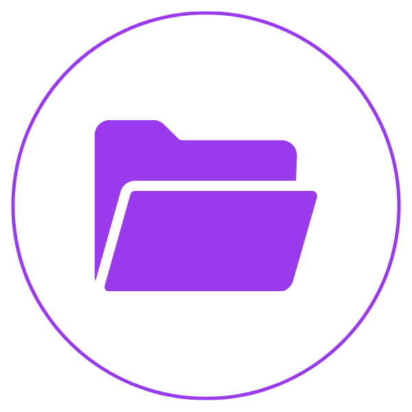
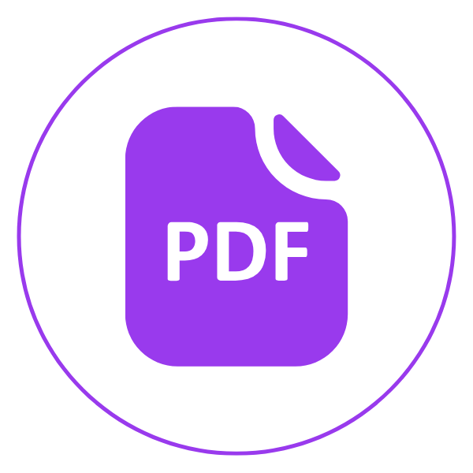
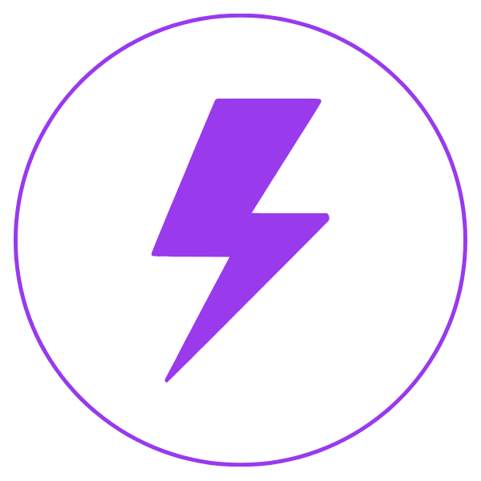

Modo Estudante
O Modo Estudante é uma solução integrada à câmera do smartphone que transforma fotos em materiais de estudo inteligente. Ao capturar imagens de lousas, livros ou anotações, a IA organiza automaticamente o conteúdo e oferece funcionalidades como resumo automático, conversão para PDF e categorização inteligente por pastas. Nosso objetivo é tornar o estudo mais prático, rápido e eficiente, eliminando a desorganização e o excesso de aplicativos.
Funcionalidades

IA Integrada
à Câmera

Resumos
Automáticos

Organização
Inteligente

Conversão
para PDF

Interface Simples
e Rápida